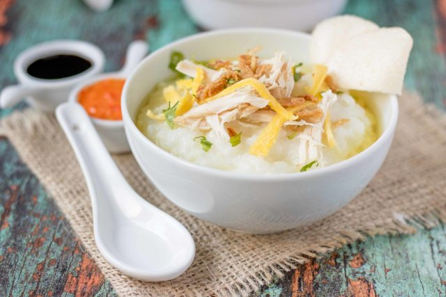

Bubur Ayam

Bubur Ayam. With sambal and soy sauce as condiments
Bubur Ayam is another classic staples in Indo-Melayu dish
, it literrally translates to chicken porridge. It is served
warm, with condiments such as sambal, soy sauce (sweet/salty),
and drizzled with kerupuk.
- The Ingredients
- Rice
- Water
- Chicken
- Garlic
- Salt
- Sugar
- Cooking Steps
- Wash your rice
- Submerge your washed rice inside a pan
- Let it slow cook until porridge texture achieved
- Cut up the chicken into thin slices, throw inside the porridge
- Let it simmer while you add salt and sugar
- Bubur Ayam is Served!